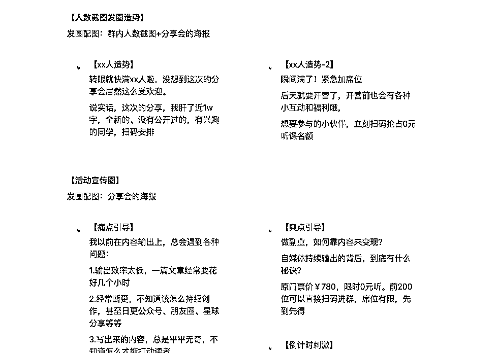
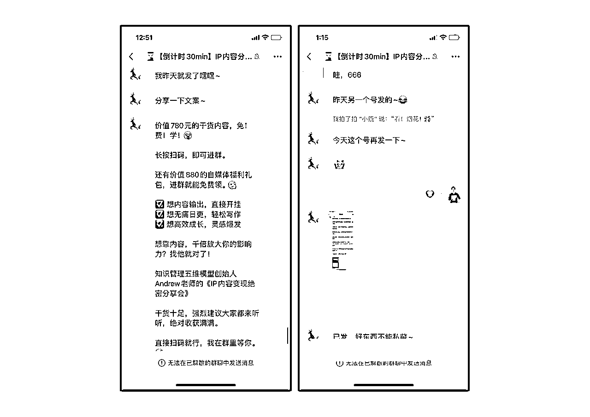

来源：https://x6n09emgmm.feishu.cn/docx/RZoTdhO49o8Vb6xpixFcVj7EnGd
大家好，我是潜水了1年多、终于发出了第一篇帖子的生财圈友Andrew，是一名知识管理教练，“知识管理五维模型”创始人。
去年从职场裸辞后，开始全职内容创业，专注为更多人搭建终身受益的知识管理系统，提升ip商业价值。
在芷蓝姐、靠谱的点拨和助力下，在7月下旬发起了一场群发售，售卖我的知识管理私教课程，累计营收2.5w。
以下是此次群发售的收入截图（8月份有部分收入来自电话审核的尾款）
这次分享是我的生财首秀（没错，潜了一年多终于有勇气发出来了哈哈），篇幅较长，约1.6w字，阅读时间约20min。
全文主要分为5个部分，可以在pc端的侧边栏点击以快速定位。
1.背景介绍
2.群发售目的
3.群发售的前期准备
4.群发售的全部流程及经验分享
5.这次群发售有哪些不足之处
6.最后的心里话
我曾经是一名互联网设计师，在职场打工了5年半，坐标在南京。
去年，我从职场裸辞，全职成为了一位自媒体创业者，专注做知识管理赛道。
其实初入职场的那段时间，我可能和很多人一样，相信自己可以在这条路上持续耕耘、越走越远。
但是，当我被职场的需求、加班、内卷不断击溃时，
当我每天晚上10点多，拖着疲惫不堪的身体，赶着地铁末班车回家时，我开始愈发恍惚了。
我仿佛看到了我这一辈子的重点。
50多岁的老Andrew，坐在一个小方格子里，他在电脑前敲打着键盘、点击着鼠标，眯着眼睛看着密密麻麻的需求文档，揉着酸痛到不行的眼睛。
我不禁反问自己：
这就是我想要的吗？这就是接下来的20多年，我每天要做的日常吗？
但是，我听了所有人的建议啊，考个大学，进个稳定的公司，每月拿一笔稳定的收入。
到底是哪里做错了？
我开始质疑自己的选择，
质疑这毫无意义的内卷；
质疑让用户上瘾的设计策略；
质疑为了满足商业化需求，而成为忙到无法思考的工具人；
质疑我念念不忘的涨薪、晋升、跳槽…
当你开始质疑，质疑这看似约定俗成的一切时。
这个过程，就好像楚门的世界被捅破了一个洞，真正的自由之光从天上透出。
我内心真正想成为的，根本不是什么设计专家、设计高管呀。
我真正想成为的，是我自己。
纳瓦尔说：在“成为自己”这件事情上，没有人能比得过你。
我很庆幸，经历了三十二年的兜兜转转，我找到了。
于是，在去年10月份，我鼓起勇气裸辞了，在走出办公楼的那一刻，我仿佛重新看到了自己。
目前专门深耕知识管理这个定位的人，其实不多，我在搜小红书对标时，真正在做知识管理的，也寥寥无几。
而这也就意味着，这个赛道没有那么热门。
那么，为什么我要坚持做知识管理这个定位呢？
我从三方面来和大家解释下。
1.它是我热爱的领域
知识管理这个方向，属于我热爱的领域，从研二开始，我断断续续探索了7年。
只是，绝大部分时间都是自己去学习、试错、踩弯路、开新路，但完全没有想到可以作为个人IP的赛道。
直到去年年底，断了职场收入，发觉要有一门吃饭的手艺活后，才正式确定要做这个。
所以，绝大部分时间的探索，我没有赚到一分钱，但是在「热爱」的源动力下，我乐此不疲。
如果我们所做的事，并非自己真心喜欢的，我们只是看了别人做这个做的很好、赚了很多，我们也去效仿。
首当其冲的挑战，就是你很容易因为没有鲜花和掌声，而轻易放弃。
很多人问我：Andrew，为什么你可以保持每天写作的习惯呢？
答案很简单，我喜欢做这件事。
所以，即便没有人看、没有人点赞，我也乐此不疲。
梁宁说，上天安排了一个人的命运，或者说给一个人使命，其实是给他一个爱好，一种真实的喜欢，一种叫作“瘾”的东西。
我们要找的，就是这个东西。一旦找到这个东西，你会有闪闪发光一天。而这个东西，只有你自己最清楚。
2.市场是有需求的
很多人对知识管理其实是有潜在需求的，只是很多人没有意识到问题的因果关系。
比如，首当其冲的便是「学习」。很多伟人、前辈都在强调好好学习这同一件事，
如德鲁克说过：现在最紧迫的任务，就是教会人们如何学习；
雷军说过：学习能力是最重要的能力，有了它你做什么都能成功；
李笑来老师说过：学习学习再学习，意思就是：要先把“学习”这个本领“学习”好，再继续“学习”。
另外，我所敬佩的这些前辈，明白老师、Scaler老师、兰陵王老师、徐宿老师等等，无不在强调着学习的重要性。
他们都在反复强调要学会学习，因为它是迭代认知系统的前提；它也是所有能力中最最底层的那个能力。
有了它，其他一切能力，不论是各个行业的专业能力、还是通用能力，都可以在此基础上快速生长。
当无数的牛人告诉你什么最重要时，那么，它就是100%最重要的。
但很遗憾的一点是，虽然我们从小到大都在学习，哪怕在职场，我们都在不断得学习，但我们却几乎没有想过「如何学习」。
因为，从我们念小学开始，并没有一位老师、课程教过我们该如何学习。
大家默认学习是像呼吸一样自然的事情，你会呼吸吗？
你会，那你就会学习。
所以，我们秉承着学生时代的旧有习惯去自动驾驶，投入很多力气却摘不到好果子。
比如，很多人会出现以下这些问题（这些问题的依据，出自我之前给潜在客户、意向客户打的100多个电话咨询）
之前有个学员和我聊过他的问题，他就是一直在使用微信传输助手来收藏信息。
当时我和他打电话，我让他往上拉，看看自己收藏了多少信息，发现根本拉不到底…
微信成立了多少年，他就囤了多少年的信息，特别吓人。
所以，很多人都面临着这样的问题，只不过，很多人并没有意识到这是个问题，更多的，只是任由问题发生和存在。
因为解决问题需要主动动脑，而动脑是高能耗的、反人性的。所以，在基因的力量下，我们宁可承受现状带来的痛苦，也不愿意主动去解决问题。
就像周岭老师在《认知觉醒》中所说，承受痛苦，只需要陷在那里不动。
美团创始人王兴的观点，亦然：多数人为了逃避真正的思考，愿意做任何事情。
一开始的人群，其实没有做限制，也没有针对创业者这个人群。
直到发生了以下3个“大事”，我才惊觉到，知识管理简直就是为我们创业者量身定制。
事件1：我看到了生财圈友们的痛点
我很喜欢亦仁在全国见面会上说过的一句话：
人和人认知上最大的竞争，其实是信息输入量的竞争。
这句话和张一鸣的一个观点，形成了很有意思的承接关系。
我最近越来越觉得，其实对事情的认知才是最关键的。你对一件事情的理解，就是你在这件事情上的竞争力。
遗憾的是，在信息输入的阶段，甚至之前，我们就面临了相当多的问题。
为了避免陷入知识的诅咒，我去检索了很多生财前辈们的优秀文章，并从中拆解、提炼了圈友们的痛点。
参考的文章如下：
《我分析了40W评论数据！挖掘出了生财小白的7个痛点问题！》——七小
https://wx.zsxq.com/dweb2/index/topic_detail/184442281252542
《生财的圈友，可能存在哪些情绪》——亦仁
https://wx.zsxq.com/dweb2/index/topic_detail/214824125854411
《焦虑是怎么产生的》——十一
https://wx.zsxq.com/dweb2/index/topic_detail/412851844822458
《学习和赚钱是什么关系？》——明白
https://wx.zsxq.com/dweb2/index/topic_detail/118818854252482
《精华帖阅读方法》——亦仁&轩辕
以下，是从这些文章中所拆解出来的痛点，分别是定性描述&圈友代表性评论：
问题有了，下一步就可以归纳共性，找到规律。
根据圈友们形形色色的反馈，基本可以归纳为以下几类：
是不是很常见？这些问题，和我们日常学习时所遇到的问题极为相似，只是输入对象的不同而已。
而这些问题，统统在于「学习方式」上出现了问题，而会学习，便是知识管理可以解决的。
事件2：我通过问卷调研，看到了自媒体朋友们身上的痛点
根据对目标人群的问访、咨询，我一共梳理了18个和知识管理相关的问题。
并且，我将其融入到问卷中，通过各个渠道（比如社群、单个咨询、群发售等方式）让大家填写，累计收到了128份有效问卷。
下面，我把最终的数据统计结果公开给大家。
在所有的问题当中。占比最多的问题是：碎片化严重，不知道怎么把新知识糅到自己的知识体系。
这个问题占到了59.80%。（这里的百分比统计，为勾选此项的人数/总人数所得的比率）
其次，占比数量占到前5的问题，分别是：
不知道怎么把各个平台的内容，聚合在一起统一阅读和管理（36.27%，比值相近，因此并列第五）
而其中，1、2、4问题，全部是关于「内容输出」的问题，其中的大头，在于「内容持续输出」。
而「内容持续输出」的能力，对自媒体创业者来说，又是一项极为重要的能力。
芷蓝姐说：
我不论多忙也会每天发圈，哪怕发的少也要发，就是为了让用户记住我，现状这个时代，爆款不重要，持续生产才重要。没人会记住一年一个爆款内容的你，只会记住365天不间断写字的你。
也就是说，只有持续不间断得输出，才可以不断展示自己的专业和人格，被用户记住、信任。
那么未来你推出知识付费产品、或者推荐别人的课程，才会有更多人支持。
所以，对于我们自媒体人来说，持续输出内容的必要性非常大。
此外，我所敬佩的那些前辈，他们全部在持续输出。
明白老师持续日更1000天，逆熵增者叶老师持续日更800天，芷蓝姐每天输出5000字，靠谱、理白一年365天在社群输出干货分享，
李笑来老师也说过：
“从 2005 年开始，到现在 2023 年，整整 18 年，
除了少数日子之外，绝大多数日子里我都做到了「日写三千字」，竟然累积起来有两千万字左右。
如果字字都不浪费，即便是 20 万字一本书，也足足有 100 本书的量了”。
另外，代入下用户视角，持续输出的必要性其实也很容易理解。
假设，大家在表达、沟通方面存在很多痛点，痛到你不能忍受的那种，急切想要解决。
现在摆在大家面前的有2个选择，A和B都沟通表达赛道的创业者，并且都有在卖提升沟通表达能力的知识付费课程。
而A几乎不怎么写文章，朋友圈也是佛系更新；
B经常会输出关于「沟通表达」方面的文章，也经常真诚分享自己的人生感悟、价值观和独到见解。
那么你会更倾向于购买谁的产品呢？答案不言而喻。
B输出的内容会让我们觉得他很专业，B不间断输出的动作，以及他分享的感悟、价值观，让我们看到了他的自律、坚持、真诚等方面的人格。
而这些，都可以让我们产生信任。
所以，我们愿意在B这里下单，因为我们对他能力和品质上的不确定性非常低，我们会很安心。
在A那边下单，我们的不确定性太高。
他专业吗？他能解决我的问题吗？他这个人靠谱吗？他和我三观一致吗？他不会撂挑子吧...
所以，内容的持续创作能力，极大影响了变现能力。
而自媒体创业者的「内容创作」问题，也是知识管理可以解决的。
此外，知识管理也可以解决其他的长尾需求，优质信息源筛选、学员/客户信息管理、人脉资源管理等等，这里不做赘述。
这是辅助我做决策的第二点原因。
事件3：前四期招募给我的一次次迎头棒喝
从5月份开始，招生方面很快陷入了瓶颈。
我花费了大量精力，去打磨好产品、服务，去朋友圈、公众号不断宣传，但是，想了解这款产品的人却越来越少。
甚至往期学员不断帮我发圈转介绍，到头来一个来咨询的人都没有...
这种挫败感无疑是非常强烈的。
那时候的压力让我快喘不过气，焦虑得每天晚上睡不着觉。
我特别担心，以后招不到人，就彻底断了经济来源了。有时候，我甚至想着，要不要重回职场，找一个能要我的公司算了...
某天晚上我做了一个梦，这个梦让我印象极为深刻：
梦里面，我开始很卖力得招募新一期的学员，但直到最后的截止日，愿意报名的只有一位。
最后，当那位学员发现只有他一个人来报名后，找到我问能不能退款...
当时，我被这场梦给吓醒了，回过神来，才发现脊背上全部是冷汗...
我带着这样的焦虑找到了靠谱，在靠谱的引荐下，加入了芷蓝姐的玩赚合伙人，渴求能够解决目前的困境。
在芷蓝姐的指点下，我终于明白了核心的原因：我产品的受众面太窄了。
我曾经是设计师，过去三年时间，也经常做设计相关的输出分享，所以不论是微信好友、还是公众号粉丝，绝大部分群体都是设计师。
但正像芷蓝姐说的那样，职场人的主要需求点不在这。
他们更多的痛点，依旧是职场方面（如职业规划、职场沟通、作品集求职等等），对知识管理没有足够强烈的需求。
这可以解释，为什么我的招募情况越来越不理想，为什么很多学员愿意帮我去推荐，但一个来咨询的人都没有。
但是，对于很多自媒体创业者而言，他们在内容输出、知识体系、做课等方面都存在明显的卡点、甚至是迫切的需求，如果产品能帮他们解决这些问题，那么就很有价值。
所以，一次次的迎头棒喝，让我意识到，我的面向人群定错了，所以我的产品才无人问津。这就好像，你在吐鲁番卖雨伞，这个地区常年少雨，人们没有这方面需求，基本不会有销量。
所以，综合以上三个事件，我开始正式将目标人群，定位在自媒体创业者。
为了能够更贴合得匹配创业者的痛点，我也着手将产品进行一次重磅升级。
原产品基本介绍
我原有产品的内核，是「知识管理五维模型」。
从信息获取、到信息采集、到信息处理、信息整合，以及最后的信息内化。
只是，当时并没有设定好人群，所以课程大纲的分布比较平均和分散。平均用力，样样都讲，但都没有重点。
但是，在拆解了生财圈友的痛点、以及调研了自媒体创业者的痛点后，我发现，现在的课程大纲很难再满足他们的需求。
就拿调研结果的问题分布来看，读书速度方面的痛点，占比排在倒数第三位，相对很低，意味着大家的需求相对很少。
但是目前的课程，直接用了一节大课的篇幅。
内容输出方面的痛点，占比是最高的，但目前课程中，只用了最后一节写作课来单独去讲。
而且，既然是围绕自媒体创业者的知识管理，那么就需要以【知识管理五维模型】作为底层框架，以【个人IP】为一条核心主线去进行。
逻辑完全变了，所以，在以往的课程基础上进行修修补补，已经完全不现实。
最好的方法，就是推翻重做。
老实说，当初下这个决定时，犹豫了很长时间，毕竟这门课花了我几个月的时间研发、打磨。
但是，为了更好得帮自媒体创业者解决问题，这个事很有必要去做。
新产品迭代了什么？
这是新的课程大纲海报。
迭代点：
整体的迭代幅度，超出了70%。
不过，这很值得去做，一方面我自己也是在做自媒体，所以，日常的学习，反倒可以给未来的课程铺砖添瓦；
另一方面，一想到这款产品可以帮助更多创业者解决他们的问题，其实是我的动力所在。
最后，在芷蓝姐和靠谱的建议和鼓励下，我决定在7月下旬同步进行一场群发售。
以上，便是所有的背景介绍。接下来，和大家分享下，此次群发售的全部流程和经验沉淀。
群发售时间线一览
关于快闪群的功能定位，我就不班门弄斧了，我直接引用靠谱在这个帖子《如何做一场高成交的卖课快闪群》里的一句话，写得很棒：
快闪群的功能定位是集中成交、部分裂变、部分阶段转化，也就是，以前想买没下定决心的这次会买，不清楚状况但是被气氛搞到了的会买，即使这次不买，也把草深深种进了TA心里，以及，本来不认识你的人，一下子通过这个也对你印象深刻。
对于微信生态来说，平时的朋友圈营销，就像是柜台卖货，然后群发售，就像是品牌活动，你会做一些展示，讲品牌故事，请明星、演员来站台，然后公布重大的福利，促进一波转化。好处肯定是业绩多啦，坏处是不能天天搞，预算高，人员累，也不能让观众觉得你们品牌天天促销，所以大体是1-2月做一次刚好。
所以，快闪群最大的优势，就是通过讲故事、秀肌肉、请大咖、学员站台等方式，来促成批量的转化。
因此，它可以帮我我实现集中成交的目的。
告诉大家：我是谁？我有什么产品？我能帮你解决什么问题？我有哪些用户证言？
通过不断得重复，来将这些东西植入到潜在客户的心智，因为只在朋友圈运营的话，存在一个触达的问题，很多人是不知道我在做这个的。
尤其在这次拉人的环节中，靠谱为我怼了近300个新人进群。这些新人在初期是完全不了解我的，所以打造认知就显得更有必要性。
因此，这次群发售，就相当于举着一个大喇叭，对群里所有的用户去喊话。这样，即便大家没有下单，但后面，只要他有这方面的需求，并且对你有足够的信任，就会直接找到你。
这是我第二次做群发售，第一次做的时候，很多东西、话术记录得比较零散，所以，可以正好借这次机会，完整得倒逼我自己梳理一套sop，便于日后不断复用。
这里简单和大家提下需要准备的要点，具体的流程方法，可以直接参考第四部分
受芷蓝姐这篇文章的启发，
《我是如何在30天内用朋友圈剧本＋快闪群成交，给我的新舞蹈室赚了6万块钱的？》
我开始提前规划好发圈节奏，通过朋友圈造势为后续的群发售做铺垫。
造势的方法很简单：让大家参与到这款产品的见证中。
正像芷蓝姐说的那样：
没有一个用户喜欢被「告知」、被「强推」，一旦被强推了，他们很容易产生抵触心理。
更好的方法，就是把用户提前代入到营销场景，让用户感觉参与进来了，从而增强纽带关系，强化信任。
比如，我尝试了下面这些朋友圈：
1.坦白圈
真诚得把自己升级产品的原因，和大家坦白，目的其实就2个
①让大家、尤其是创业者朋友们知道，我的产品面向人群确定了
②结尾处“我会持续透露更多迭代细节，有兴趣的话欢迎关注朋友圈”，引导潜在客户持续关注、持续参与进来。
这条圈，还请了朋友圈运营专家——小鹿帮忙看看，小鹿的专业指导下，效果比改之前好了N倍，最后吸引近30个人点赞。

2.生活圈-做课
这条圈是在向大家透露做课细节，沉浸式做课，从早上9点半到下午4点多（真事）
这条圈的意义，依然是通过剧透的方式让大家来见证
3.干货圈
因为有2位朋友表示好奇，我是怎么做到不吃不喝沉浸做课的
所以，我就趁热打铁，继续发了条干货分享
一方面，提供实用价值
另一方面，「接上条」的关键词，可以引导没看到上条圈的人，来主动触达这条圈，增加见证的人数
4.剧透圈
这条圈，是在向大家剧透产品的迭代成本，同时跟大家预告，今晚会先剧透一个神秘福利。
一方面，强化大家对产品的期待，另一方面，引导大家关注今晚8点到底有什么福利。
可惜的是，这条圈点赞的人很少，我猜应该是发送时机不太好，临近吃饭，大家可能没时间看手机。
5.预告圈
晚上8点（其实拖了3分钟...），我就在朋友圈和大家公布了这个超级福利
内容大致是，我筹备了一节极为干货的课程，并且免费分享给大家，我剧透了海报进度和关键词，让有兴趣的人点赞
这条圈的价值非常高，我来拆解下
1.「接上上条」的关键词，可以引导没触达到剧透圈的人继续触达
2.公布了目前进度，引导大家参与
3.通过关键词来提前露出分享的类型，吸引有兴趣的人关注
4.行为指令引导大家点赞，明天只要在这条圈发一条官宣评论，所有人都可以接收到提醒。
6.官宣
2天后的中午12点，这条朋友圈正式公布分享会的活动。
告诉用户，我的前后变化、持续输出内容的重要性以及大家的痛点。
同时，海报配图，吸引大家扫码加入。
通常来说，一场群发售的周期是在3-5天
我做了4天，除了开营之外，第一天是分享，第二天学员分享+发售，第三天直播连麦+追销，第四天Q&A+追销。
具体安排尽可能得连贯，维护用户的注意力和欲望。
比如，我在第二天的安排，原本是学员分享后切直播，但好在靠谱指点：学员分享完毕后，大家的兴趣会在一个很高的峰值，这个时候再切直播，反而容易降下来。所以，倒不如直接进行产品发售，促进转化。
关于每个字段的注意事项，简单和大家分享下，如果有准备做发售的小伙伴，可以重点留意一下。
主标题
一开始，我的主题词要么是知识管理、要么内容创业，在芷蓝姐的指点下，发现主标题重点要吸引目标人群的眼球，所以尽可能得挂上利益点。
所以最终的主标题，融入了IP、变现这样的关键词。虽然分享内容不会讲营销方面的知识，但是「内容输出」和变现能力也有关联。
次标题
同样的，尽可能得摆出利益点，因为字号偏小，所以文案可以稍长一些。
个人背书
把自己的成就、荣誉全部摆上来，需要注意的是，自己所在的赛道直接放在第一行。这样，别人就可以快速感知到「你在做什么」。
分享内容
具体的分享主题，比如我是一次干货分享、2次学员分享以及和靠谱连麦。关于我自己的成长故事，我揉到了开营晚上。
时间
分享的起、止时间，这里我直接和分享内容揉到了一个卡片上，看上去更直观。
价格
原价和限时价两侧对比放，通过锚点效应，让大家感知到很值。
进群福利
放在海报最末，标题可以通过高亮和emoji来吸引眼球。
进群二维码
方便大家直接扫码进入，注意，这里一定要加个「立即扫码」的行动指令，看似只有四个字，但可以起到一个强引导的作用，提升读者进行扫码行为的概率。
这部分的文案要提前准备好，避免临时抱佛脚影响正常的节奏。
我直接都放在了notion上面，只要到了合适的时间节点，我就可以直接复制粘贴到朋友圈，一键发送，很快捷。

朋友圈基本包括以下几个类型：
福利这块，主要包含3类
①进群福利，这部分福利，在大家进群后就可以领到
②裂变福利，吸引大家不断邀请自己圈内好友
③群内报名福利，促进发售
这里聊一个要注意的，人员如何筛选？
1.尽量从学员中去找
2.如果不是自己的学员，就要去找足够信赖的、靠谱的。
千万别突然喊些交集很少、不够了解的人，随机组个戏班子。
之前我就躺过坑，因为时间紧急，所以临时呦呵，来了一些交集很少的人。一开始大家其实都蛮活跃的，但后来慢慢就喊不动、撂挑子。
所以，自己了解的、靠谱的熟人是最好的，因为，确定性够高。
从第一批观众进入到我的群里后，意味着群发售的正式启动。
下面，我从9个环节，来向大家展示这次群发售的全貌，以及每个环节我个人的一些经验。
我是直接通过二维码的方式，让大家扫码进群。
当时还在纠结要手动拉人还是扫码进入，咨询靠谱后，才知道一定要从用户角度出发，直接手动扫码其实更方便，我这边也省力气。
在大家哗啦啦得进群后，大家的兴趣其实是处于相对较高的阶段。如果不及时发一些引导性文案，很容易影响后续的氛围和加人转化。
所以，我和主持人提前对接好了不同类型的文案
1.新人欢迎语
一般在每进10人左右（人数是相对的，发送频率最好是5min以上），就发一遍。
欢迎语文案有几点要注意
①多提供几种不同形式、不同篇幅的文案，不要一模一样
②为了照顾新人体验，发的频率要适中，不要不发，也不要每分钟都发
在前期进群来的人很多时，一般每3-5min就发一遍；
中后期来的人很少时（比如突然来了两三个），不到1min就可以直接发了。
2.人数竞猜小游戏
在群人数增加减缓后（比如40人左右），可以和大家一起玩个人数竞猜小游戏。
规则也很简单，让主持人引导大家竞猜：群满50人是几点几分？答的最接近的同学送红包奖励。
为什么要做这个游戏，一方面通过鼓励互动，提升大家的参与度，增加大家归属感和信任感；
另一方面，可以把过程和满xx人的场景截图发圈，晒社群氛围，吸引更多人进群。
氛围+怼群，一举两得。
做这个游戏时，注意3个事项
①尽量在群人数接近50的整数时，比如40、85、139的人数，再引导大家竞猜，缩短竞猜的等待时长，增加刺激氛围。
②一定要加上「每个人只有1次竞猜机会，以第一次为准」的限制，避免有人根据群人数的进展重复竞猜，到时候谁中奖就没有悬念了。
③氛围跟上。如果1min内没人参与，一定要呼叫氛围组带头，之后大家就会跟着一起参与。
不过有一点我没怎么做好，我忘记在引导文案里加上「6.66金额的红包」了，如果加上具体数字，愿意参与的人可能会更多。
发福利的环节，我没有直接在大家一进群就开始送，而是先设计好环节，一步步往外去公布。
一方面，可以避免大家领完就走，另一方面也可以增加互动、增加参与感。
比如，我让主持人做了新一波欢迎后，开始公布独家福利，期待的小伙伴可以扣666。
这时候，同样可以安排氛围组牵头带动。
回复的人数差不多后，开始公布进群福利，引导大家加我微信获取。
我这里准备了三项，分别是
①《裸辞创业后，我总结了20条自媒体内容创作秘诀》电子书*1
②《自媒体创业者的20条知识管理小技巧》电子书*1
③自媒体必读电子书书单合集*1
这个环节，给大家分享四点经验
1.进群福利的名称，尽量要贴合目标用户的需求，并且在标题上要突出赛道、人群和可量化的利益点。
比如《自媒体创业者的20条知识管理小技巧》，自媒体创业者就同时呈现了赛道和人群，20条小技巧就是可量化的利益点。
通过这种方式塑造匹配人群的价值感，吸引大家的获取欲望。
甚至，你还可以加上价值xxx元的福利包，来提高更具象化、看得见的价值吸引目标人群。
比如，我是「价值￥880元的自媒体礼包福利」，三位数即可，不用多夸大。
2.一定要引导大家添加我微信来领取。
如果直接发群里，大家领完就走人了，而且很多通过其他人推荐过来的新人不会添加我好友。
3.在对方领导福利后，一定要引导对方群里回复领到了
比如「我已领取价值￥880的自媒体ip内容变现福利包，谢谢Andrew老师」
这个动作既能引导更多人来添加我微信领取福利，
又可以增加群内氛围，作为发圈素材继续吸引新人进群。
而且，我自己写的电子书，对方在阅读之后也可以感知到我的专业经验。
当然，这个环节其实有做的不好的地方，比如我没有引导主持人推送我的微信名片，大家加我微信时，需要有多余的操作路径。如果直接推名片的话，阻力会减少很多。
这个环节的意义，在于让大家在自己的朋友圈来邀请更多人进群。
方式也很简单，设置一个奖励，成功邀请到3位新人就可以获得。
我这里的奖励是《自媒体万用金句素材包》，邀请3位就可以获得。
这个环节，和大家分享3点注意事项：
1.提前准备好多个朋友圈文案
减少大家的发圈成本，不然大家在发朋友圈邀请时，还得花很多时间自己想，形成发圈阻力
2.主持人发完话术后，打消大家顾虑
因为很多人是不太好意思发朋友圈的，所以，就可以主动和大家说这个行为带来的价值，比如我会说：
“我知道大家不好意思发圈，其实也没事，你就当推荐给你身边的好友，他们听完价值这么高的分享，感谢你还来不及呢”
3.如果没有牵头，可以安排氛围组来，并且截图到群里激励大家
这里特别感谢小鹿，她第一个站出来主动支持，而且还自己用心编辑了朋友圈文案，来帮我邀请更多新人❤️

不过，这次裂变的效果不太理想，我猜测有2点
1.我一直拖到第二天才让主持人发，大家热情开始有所冷却
2.金句素材福利包，可能有些单薄、不够吸引人。
哈哈，其实本来没有这个环节的，是建群第三天时发现了一个很大的问题：
当时群人数只有200开头，但每次发圈宣传，能进来的都只有一两个，陷入了人数瓶颈。
于是在很长时间的纠结下，终于鼓起勇气找靠谱帮忙。
为什么之前一直没有找靠谱帮忙，主要原因还是我天生不想麻烦别人的性格。
我一直觉得，「向别人求助」的动作，会给他人带来麻烦，尤其是靠谱这么厉害的巨佬，我很畏惧和她开口求助。
但后来，我发现真的想多了。
和靠谱求助后，靠谱直接二话不说，就在自己的朋友圈和陪伴群帮我大力推荐，真的特别意外和感动。
因为靠谱的流量实在是过于可怕，不到半小时，群里就哗啦啦得来了100多个新人...
另外，因为靠谱直接在群里引导大家加我微信，不到几分钟，我的微信就源源不断的好友加爆了，当时光通过好友和派送福利，就花了近两个小时的时间。
当天晚上，我粗略数了下，新加了150多个好友。
有人说，一个人一生中能遇到的贵人很有限。
我很庆幸，在我的一生中，能遇到这么一位愿意提携我的贵人。
原本，我其实没准备多少文案，更多其实是我来简单自我介绍+举办这次分享会的一些愿景。开营后的那一天就分享干货了。
不过，开营的那天下午，我一直在想一个问题：快闪群里除了之前设计圈的人比较熟悉我，但是大部分人并不了解我。
如果就用我准备好的简单的开营话术，其实很难给大家留下形象，更别说后一天分享的到场率了。
所以，我立刻把开营的文案做了大幅度的迭代，并且因为这次迭代，收获到了超预期的效果。
和大家分享下这次开营的环节、以及开营的大纲。
1.安排主持人预热
预热话术包含简单介绍+红包雨的利益点，同时给出接龙的行动指令，提升最后的到场率。
这里同样可以安排氛围组牵头。
预热的话术可以安排到多个时间节点。
2.主持人介绍
注意，之后的每次介绍，都需要主持人来介绍，来给自己造势。
这个和综艺节目里介绍嘉宾一个道理，一般都需要主持人带下节奏、介绍嘉宾各种成就，然后在大家的欢迎下，嘉宾登场。
3.开营分享
①红包开场
我这里连发了4个红包，不过封皮加了点东西，分别是跟大家打招呼、感谢大家听我分享、感谢合伙人和靠谱的助力
既足够炸场子（红包雨确实有这个奇效）。又可以通过感谢的方式来简单破冰+初步提升好感。
②坦白自己的感受
说实话，当时心情有些紧张，毕竟在场很多人不了解我，而且第一次对着400分享。
所以，我就直接坦白了自己的紧张，并且给了个小互动，让和我一样社恐的人拍拍我。
然后，大家的反应有些超出预期，我想，大家应该会比较喜欢这种真诚。
正像靠谱说的那样，真诚永远就是必杀技。
③自我介绍
这里我就一句话简单介绍了，因为主持人已经说过了，海报上也露出了，所以title、头衔没必要再给
④成长经历-裸辞
这里我着重讲了「为什么我要裸辞」，从一开始的一腔热血，到被职场的加班内卷击溃，乃至在地铁末班车上的种种感受和困惑。
接着我借用了《楚门的世界》那个谢幕的经典场景，来引出我最终的决定。
成长经历，大家一定要重点来写，因为这块地方会起到一个植入人设的作用（这个人设一定得是你自己，绝对不是你凹一个假的人设）。
而且根据后续大家的反馈，这一块的确打动了很多人。
⑤成长经历-写作
讲完「为什么裸辞」后，就过渡到「为什么要举办这次分享会」。
这里，我讲到如何开始公众号写作，到收获越来越多人的支持。
然后，给出了自己的核心价值观：我一直认为，个人ip最重要的，并不是变现，也不是涨粉。而是成人达己，成就他人，找到自己。
就是这条价值观，成为了我的代表性金句。
有记忆点的动作，重复做，所以后面几天我也一直在强调这句金句。
接着，我直接给出过去的写作之痛，以及现在的理想状态：我如何通过源源不断的内容来吸引到越来越多信任我的、愿意付费朋友，来让我的每月营收不断突破。来传达我自己的实力和专业。
⑥说出愿景
这里就很简单了，告诉大家，为了能帮到更多曾经和我一样的人，才举办了这次分享会。
同时透露明天干货的炸裂程度，吸引大家到场。
结束后，大家的反馈超乎预期的热烈，所以，基本能验证这次开营文案的效果。
我尝试提炼出了四个底层思路，大家后面也可以结合自己的故事来使用：
1.有冲突
有曲折、有失败、有至暗时刻，但是都通过自己的努力迎来曙光
2.有共鸣
详细描写自己的痛苦，可以引发大家共鸣，正是因为经历过，所以才能懂你的痛苦
3.有实力
通过秀肌肉来告诉大家自己是专业的、是有实力的
4.有升华
也就是此次分享会的举办动机，是希望通过分享的方式，来帮到更多人
干货分享的白天，只需要做三件事就好。
1.欢迎新来的小伙伴，并继续引导大家加我微信和裂变
2.让主持人把昨晚的开营打包分享出去
3.搜集大家的反馈，发圈
之后的流程和开营那天差不多，主持人先预热、到时间后开始介绍，然后我来放干货。
这里有个注意的点，原本我是想着干货分享完就发售的。
不过好在靠谱指点我，我才发现是操之过急了，大家进群才不久，一定要先把干货分享给他们，后一天再介绍产品，减少大家抵触。
干货分享的环节，和大家分享下我的4点经验：
1.可以带着大家一起下场红包雨
开头我想搞点事情，所以想邀请大家一起下红包雨。
具体方式，就是每人发一块钱小红包，封皮写上「我会完成这次挑战的」（听完分享作为一次挑战）
一方面，通过投入金钱、立下flag的方式引导大家更重视这次分享。
另一方面，活跃群氛围，引导那些潜水的小伙伴都过来听分享。
在我自己发了红包打完样后，我就开始慌了，特别怕没有人接，那我就真“下不来台”了。
但没想到，后来陆陆续续出现了30多个红包。
我居然成功得带大家一起完成了一次红包雨。满屏红包的体验很震撼我，这个瞬间很值得铭记。
2.分享时要多多互动
这个和给学员讲课一个道理，千万别自己光顾着讲，一定要让大家参与进来。
一方面利于集中大家的注意力，另一方面给足参与感，一定程度上也可以提升信任度。
互动方式很简单，比如我一开始了解大家职业、给大家出选择题、让中枪的小伙伴扣数字等等。
互动时，尽量用数字或者字母的方式引导大家互动，减少大家的成本。
3.维护大家的视觉体验
保持每一段的行数不要太多，我一般保持在4行以内。
千万不要十几行一坨得发，不然就算内容多好，但是大家连看都不想看。
4.关键节点，配个小红包
一般适合在开始讲重点的时候来发。
一方面吊起大家兴趣；另一方面，通过红包被抢的速度，来判断目前在听的人数。
5.不要纯干货
在讲理论、方法的同时，多去结合自身的经历甚至是价值观，因为干货本身不是重点，大家对分享人的感受、印象才是重点。
比如我的这句价值观，「因为，当你无所顾忌得输出关于你自己的一切时，你才可以真正得成为你自己。」，就打动了非常多的人。
6.晒学员的变化
在结尾处，需要列举自己学员用了这个方法后，产生了什么样的变化，来让大家知道，这个方法是可复制的、有效果的，而且也可以为明天的发售做铺垫。
另外，尽量多加一点配图（比如大纲图、重点图、金句图等等），减少大家视觉疲劳，这一点因为时间关系没来得及做，所以我的整个分享配图很少，有点可惜。
最后，大家对这次分享，给予了非常热烈的反馈，甚至收到了4位小伙伴的专属红包，非常荣幸。
另外，还有很多朋友自发得写下很多感悟、甚至发圈，作为ISFJ人，看到自己的分享实打实得帮到了他人后，真的很舒适。
同时，这也在意味着，这次分享基本上还算是成功的。
白天时，除了日常三件事外，在靠谱的建议下，我引导大家做了问题接龙，让大家把做业务的过程中，所遇到的问题接到接龙里，后面会直播答疑
这里依旧可以安排氛围组牵头。
晚上安排学员进行分享，让学员分享时，我和大家分享四个注意要点：
1.至少提前一周确认学员
这个动作一定要提前做，因为很多学员晚上加班，时间抽不出。所以，学员的确认要越早越好，避免临时找不到人分享的窘境
2.提前和学员确认分享注意事项
比如发送文字的速度不要过快、不能过慢；
每段文字尽量4行以内；
开场红包，分享中多加点互动。基本就是把自己分享时的细节，复制到学员那里
这个环节直接跟在学员分享后面。当然，不能直接强推，而是先慢慢过渡。
我的过渡方式是，
1.先总结前两天的分享，带大家一起回顾。
2.再对支持自己的人进行感谢。
3.接着，和大家说，光听这次分享，效果可能不够，因为做IP的过程中，很多问题很难用单个分享来一次性解决，比如哪些痛点依然存在。
4.最后，再表示为了帮到更多人，打磨了自己的这套课程。这就算是把产品给过渡出来了。
之后，再逐一把产品的细节介绍给大家。
在引导大家接龙后，不到半小时就收到了5个审核金。
这里和大家分享5点经验：
1.介绍权益时，写明价值
比如价值￥xxx元的加餐小课、价值￥xxx元的一对一答疑指导。大家总是对实实在在的权益更感兴趣，所以可以通过价格的指代，来让用户产生一种很值的感觉
2.给出阶梯福利
比如前5名送什么，后5名送什么，10名开外送什么等等。
通过阶梯式、限制名额的福利，达到2个效果，一个是让大家觉得很值，一个是稀缺感，越早报名，享受得越多。
3.审核筛选制
因为我的产品是私教，所以需要确认能否帮到对方解决、对方是否足够合适（如预算是否吃紧、时间是否充裕等）
而且，审核制也可以侧面给到2个东西：
①不是交钱就可以上，所以足够重视交付质量
②传达最终名额的稀缺感
4.最好做个长图海报
将所有的痛点、权益、报名方式全部收纳到这个海报上，
一方面便于大家可视化得阅读，另一方面也便于别人的推荐和分销。
和大家展示下我的海报（因为太长，我分成了三栏）
5.一定一定要接龙
发完付款码后，一定要立刻把接龙给安排上。
这里我做的不是很好，因为之前没写好接龙文案，所以直接现写，一直拖了5min。
为什么要接龙，一方面，每一次接龙都可以把「前x名报名福利」给触达一次；
另一方面，接龙的方式符合《影响力》中的社会认同原则，一定程度上对其他人会有引导作用。
如果5min内没人接龙的话，可以安排氛围组牵个头。
6.有人付下审核金后，及时恭喜
比如「恭喜xx成功抢占到第x名，还剩x位优惠名额」，一来庆祝付款的小伙伴，二来还剩x位的文案，也是一次稀缺感的刺激。
不过阶梯福利的环节做的不是很好，6-10名的福利没有前5名那么诱人，所以导致5名福利名额抢完后，当晚基本就没有转化了。
发售日的后一天，需要继续趁热打铁。
所以，中午我安排了另一位明星学员分享。
分享后继续和昨天一样重复发售的动作，并成功收到了3位审核金。
当晚，开始直播，流程上先答疑，再和靠谱连麦，分享干货+产品介绍。
因为之前从来没有直播过，所以我花了一个下午的时间排练，但真实情境下还是紧张到不行，虽然直播时很紧张、也出了很多意想不到的乱子，但总体来说，算是一次全新的突破。
下面，简单和大家分享下3点直播时的经验。
1.提前评估好时间
这次答疑的时间过长，所以和靠谱连麦时没来得及上场，后面一定要先评估答疑时间，然后再合理安排
2.手机不要离电脑太近
这次直播时，很多人反馈有电流噪音，一开始我不知道什么地方出了问题，后来才知道，手机离电脑屏幕太近了，所以有信号干扰。
3.多多练习
这次直播，不论眼神、肢体动作、还是口头表达，都显得很僵硬、不自然，虽然大家给了很多鼓励，但后面还需要多多练习。
最后一天，我安排了第三位学员以及Q&A环节。
学员分享和之前的安排一样，我这里重点和大家分享下Q&A的注意事项。
因为大家听完了学员分享、产品介绍，其实多少会有一些顾虑。这时候，就可以通过Q&A环节来尽可能打消大家的顾虑、促成转化。
问题设置上，除了大家常规的一些疑问外，尽量需要打消三方面的顾虑
1.打消时间方面的顾虑，比如这段时间刚好很忙，就可以说每一期都在涨，可以先趁着最低价用定金抢占名额
2.打消不敢咨询方面的顾虑，比如我很珍惜和大家的交流机会，不需要有心理压力等等
3.打消上课方面的顾虑，比如有问题可以随时提问、咨询等等
这个环节结束后，就开始最后一轮追销了，和大家分享3点经验。
1.群昵称的前缀可以改为【倒计时xx小时】，来提醒大家目前时间不多。每次有人下单接龙，都需要照常给予恭喜。
2.这一天之前，及时给付下审核金的小伙伴约一对一的电话咨询进行审核。
审核通过后，可以在倒计时环节，引导对方发尾款截图和入学通知书，一方面让大家见证私教学员的仪式感，另一方面也有刺激下单的作用。
3.在倒计时结束后，可以追加几个动作，比如恭喜所有下单的同学，也感谢大家的支持和捧场，最后给予一些祝福，完成闭环。
最后，一定一定要及时解散。
我引用下靠谱在这篇文章中的一句话，对我启发很大：
所有的社群都有它的使命和生命周期。搞完了一定要解散的，不然会变成死群和广告群，用户体验下降。
解散完毕后，开始逐一打电话审核，并且确认成交客户的邀请人，发放佣金。
最后，这次4天的群发售成交了15位私教课学员，营收额达到2.5w+。
虽然成绩平平，但是已经成功超出了我预期。
一方面，相比上一期的招募，营收足足上涨了56%。
另一方面，第一次超出了我裸辞之前的主业收入，并且是大幅超出。
因为群发售的节奏很重要，任意一个环节以及对应话术都需要提前准备到位。
但是因为没有做足规划，导致出现了很多意外，尤其是接龙文案那一块居然被遗漏了，对于第一次发售来说，这个节点的失误很致命
我没有引导主持人推送我的微信名片，所以大家加我微信时，需要有多余的操作路径。但是如果直接推名片的话，阻力会减少很多。
之前和靠谱交流时，靠谱的一句话给我印象很深：不要增加你的制作成本和用户的使用成本
时刻站在用户的角度上来思考，什么样的方式可以减少那些不必要的麻烦，哪怕一个麻烦看似很小，都影响着用户最终的决策。
比如分享互动只需要用户扣数字、及时打包之前的分享、发售末尾发送付款码等等，这些动作都是在减少用户的操作成本，来确保用户体验。
这个是非常可惜的一点。我发现我对于群发售，有个很严重的认知偏差。
我总以为500人全部听完了分享，但事实上，非常多的人在领完进群福利后，基本就不会再看群里信息了。
这也就意味着，很多意向客户其实并没有看到我的分享，所以就需要一对一得转发分享，并且在发售的环节主动询问。
我目前的产品，只有一款1980的知识管理私教课，没有其他低客单价的产品（比如几百块的标准课、知识星球），所以没办法做价格锚点，来给用户更多的选择，照顾到不同需求的人群。
这次群发售，仅靠我一人绝对不可能完成，所以我这里要特别感谢靠谱，是靠谱愿意在社群、朋友圈大力推荐和宣传我，给予我直播连麦的机会，也是靠谱全程给我非常耐心、细致的指导。
很多人说，一个人一生中能遇到的贵人很有限。
我很庆幸，在我的一生中，能遇到这么一位愿意提携、托举我的贵人。
感谢芷蓝姐搭建的玩赚新媒、以及合伙人这个圈子，让我能够不断得破圈、有机会结识到那么多优秀的大佬，也感谢芷蓝姐对我产品现有问题的指点和分析，以及对于群发售提出的种种战略性建议。
感谢理白的支持和认可，白大的朋友圈我一直在追，给予了我非常多的启发。
感谢小鹿、小米老师、俊雄、橘子、张弛有道、青一 ，以及我的老学员们愿意帮我大力吆喝，甚至主动推荐我的产品，感谢你们的支持。感谢梅子、saki、月儿、胡桃、美楠等朋友的认可和鼓励。
感谢合伙人们对产品、海报所提出的宝贵建议，以及对这次群发售的支持捧场。
最后，和大家说说我的心里话。
我出身农村，没有多么优渥的家庭背景、没有多么强大的资源、没有多么丰富的人脉，而且我性格极度内向，公开场合时说话也容易结巴和紧张。
但我始终都在毫不动摇得笃信三件事，而这三件事，支撑着我一路走到现在。
现在我想把它们分享给你：
1.当下所有的状态，不论是苦难、焦虑、痛苦，全部来自我自己的选择；
而我拥有足够的权利，来选择另一种我想要的未来，也有足够的能量，来创造我想要的未来。
2.我每一天、每一刻、每一秒的想法，都在不断创造着我自己的人生轨迹，
所以，别人怎么看我、怎么想我，这完全不重要，重要的是我怎么想。
3.我认为，做个人IP，真正重要的并不是变现和涨粉，而是成人达己，成就他人、找到自己。
其中最重要的第一步，是先找到自己。找到自己的热爱、找到自己真正想要的、想成为的。
正像乔布斯在斯坦福大学的演讲所说：
你的时间很有限，所以不要浪费时间，过你不想要的生活，不要被教条束缚，那意味着要按照别人的想法生活。
不要被世人的喧嚣掩盖了你的心声。最重要的是，要有跟随你的内心，和直觉的勇气。它们会让你知道，你想做一个什么样的人。其他的一切，都是次要的。
谢谢你花那么久的时间看完我的文章，希望我在生财的第一篇帖子，能够给到你力量和启发。
我是Andrew，若文中任何细节没有看懂、欢迎找我一起交流探讨。
如果有什么能帮到忙的地方，我也很乐意给你提供帮助。
祝我们一起生财有术。